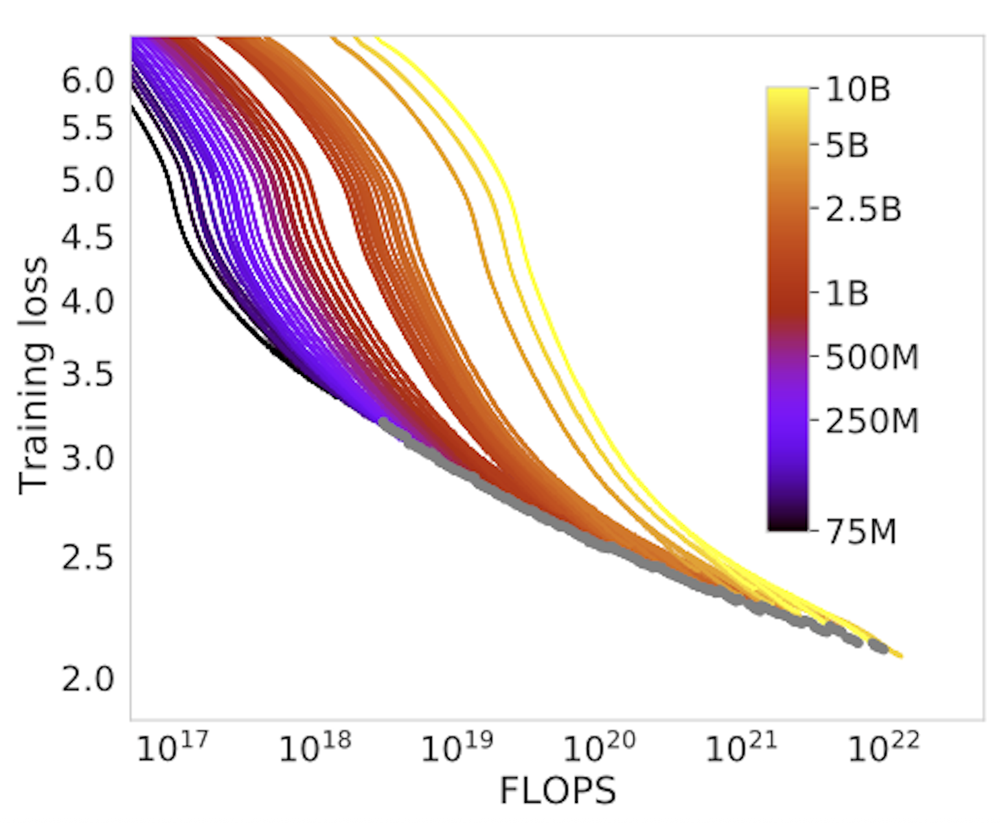
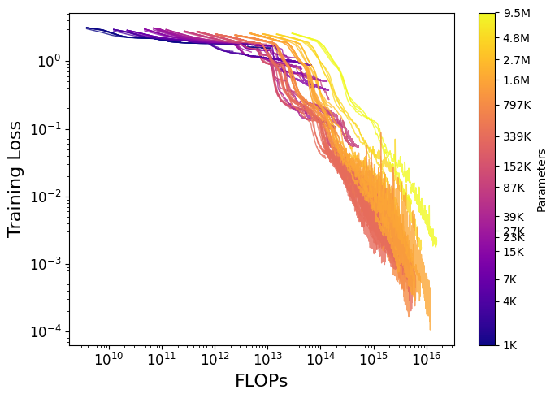

TL;DR: I derive Chinchilla-style transformer scaling laws in a minimal setup using small models (<10M parameters) and synthetic addition data, all trained in a single (free!) NVIDIA T4 Google Colab notebook.


The exponential growth in AI investment, infrastructure, and capability seen over the past half-decade can be extrapolated from the language model scaling laws famously published in Kaplan et al 2020 and refined in Hoffmann et al 2022. These scaling laws simply describe the empirical relationship between the amount of compute used to train a language model and its performance. The Kaplan paper found that model size (parameters), dataset size, and compute (FLOPs) were the key variables impacting performance as measured by training loss. From their findings, the authors derived scaling laws that reliably predicted a model’s loss as a function of its parameter count and the total FLOPs of training compute. These relationships were power laws, meaning a constant-factor reduction in loss required a much larger multiplicative increase in compute/data/parameters. This work found that particular nuances of a transformer’s architecture (width, depth, attention heads, etc) were insignificant compared to the necessity of scale – a bitter lesson. To read more about the history of scaling laws, check out Lilian Weng’s excellent blogpost.
Subsequent work from Google Deepmind (Hoffmann et al 2022) refined the exact formulation of the scaling relationship, introducing the so-called “Chinchilla” scaling laws. They found that due to some methodological issues (explained here) the Kaplan scaling laws overestimated the importance of model size. Instead, the Chinchilla authors determined that the most compute-optimal models should have fewer parameters and more data than previously thought, and that data and parameters should be scaled roughly evenly as models get larger. These Chinchilla scaling laws proved highly influential, although mixture-of-experts models and inference economics have since changed the optimal way to train LLMs.
While replicating full scaling law experiments up to the frontier is prohibitively expensive, you can demonstrate scaling laws at home, with some limitations, by simplifying the data regime and scaling down the experiments as done here. In particular, I am roughly following a suggested exercise from Google Deepmind pretraining lead Vlad Feinberg's blog post:
"Code a ~10M transformer using only jax, flax, optax in free colab using tpu. Hard code it to accept digits 0-9, space, +, =. Generate a dataset of simple up-to-3-digit numbers, have it learn addition. Should train quickly on T4 GPU (pad examples to fixed length). Derive Chinchilla laws for this; see how they differ for dense vs MoE architectures."